Start with these, grow your green thumb
Hand-picked, step-by-step guides — from your first pot to a full harvest.
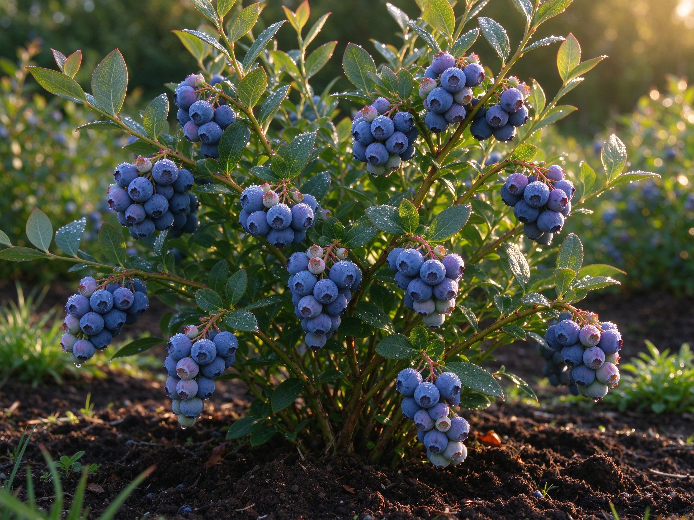
How to Grow Blueberries: Acid Soil & Big Harvests
One bush gives years of berries — get the acid soil right, plant, prune, and harvest juicy fruit.
Read guide →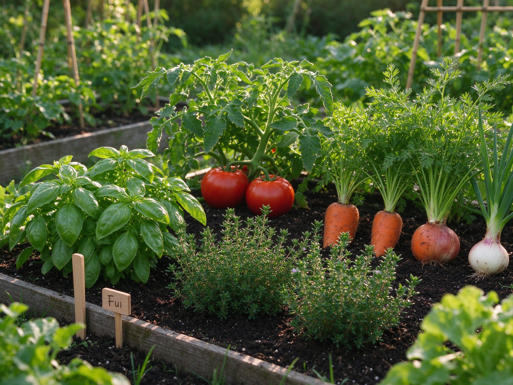
Companion Planting: 12 Pairings That Work
Skip the myths — the plant combinations that really repel pests and grow better, plus what to avoid.
Read guide →
Raised Garden Beds 101: Build, Fill & Grow
Beat bad soil and grow more in less space — how to build, fill, and maintain a raised bed the right way.
Read guide →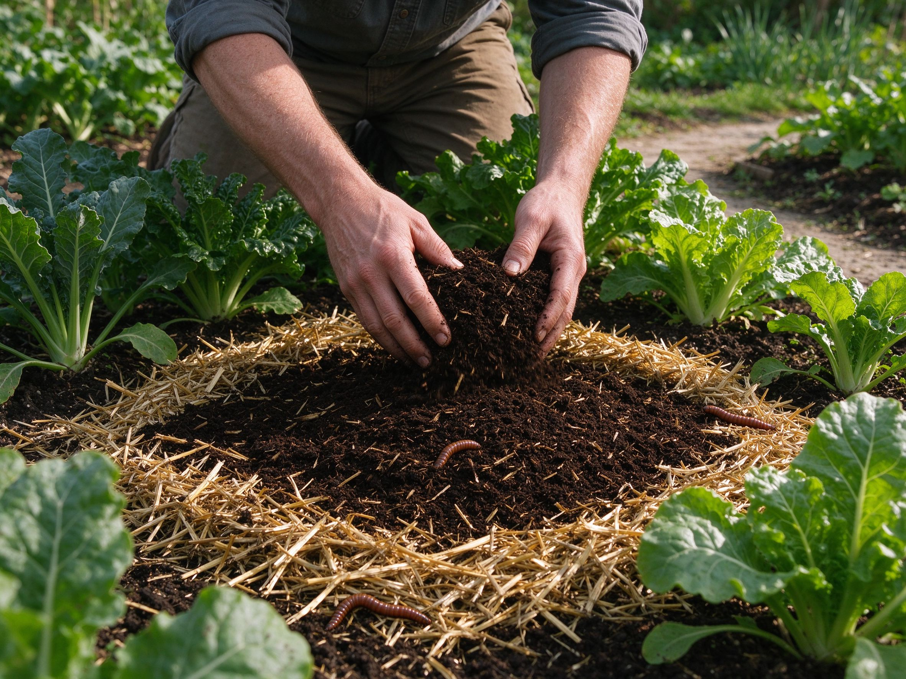
No-Till Gardening: The Regenerative Way
Stop digging and grow better — no-till builds living soil, slashes weeds, and saves your back.
Read guide →
Drought-Tolerant Plants: A Water-Smart Guide
Build a beautiful garden that survives dry summers — low-water plants and smart techniques.
Read guide →
Seed Saving 101: Save Seeds From Your Garden
Save money and preserve favorite varieties — a beginner's guide to saving your own seeds.
Read guide →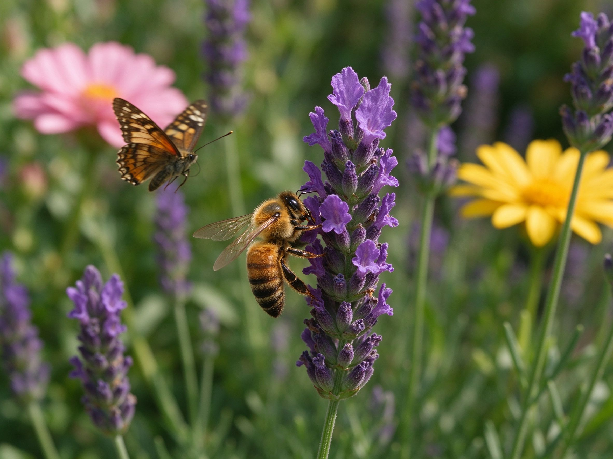
How to Start a Pollinator Garden
Attract bees, butterflies, and birds with the plants they love most — one of the biggest garden trends.
Read guide →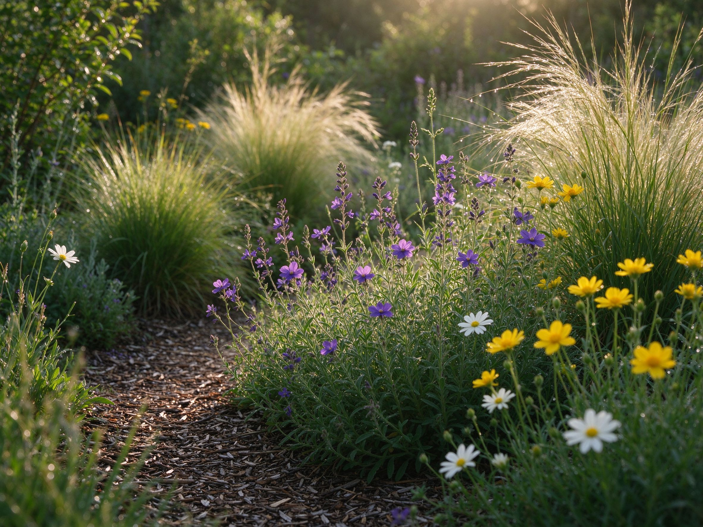
Native Plants: Why They Matter & How to Choose
Easier, healthier, and better for local wildlife — a beginner's guide to going native.
Read guide →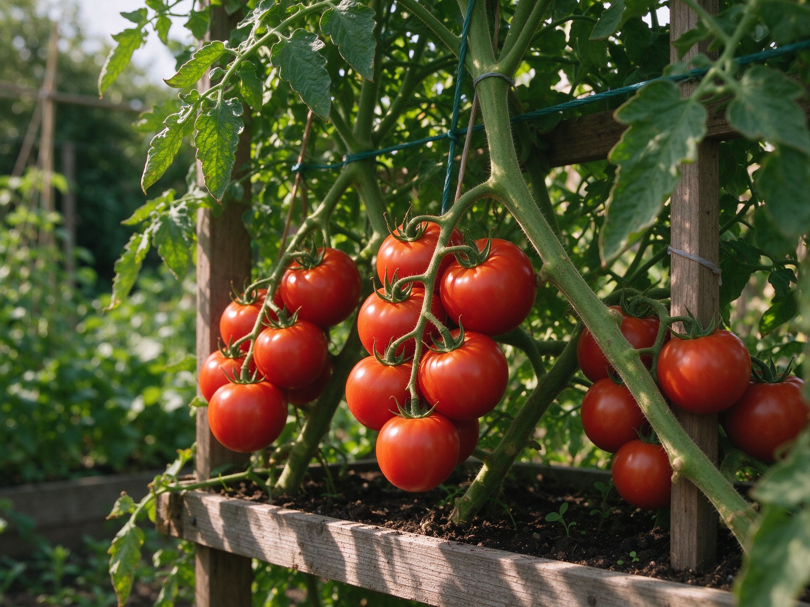
How to Grow Tomatoes at Home
The most popular home crop — planting, watering, staking, and harvesting juicy tomatoes.
Read guide →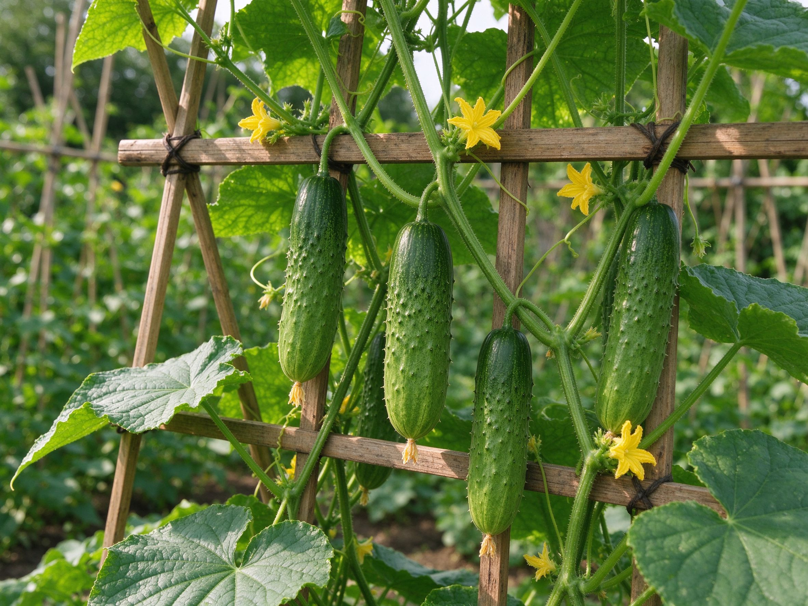
How to Grow Cucumbers at Home
Crisp, productive cucumbers — plant, trellis, water, and harvest for a bumper crop.
Read guide →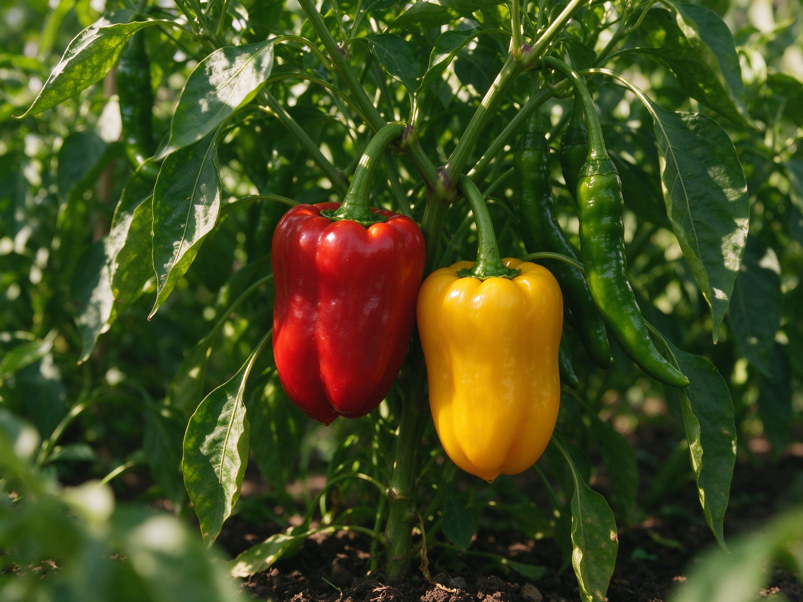
How to Grow Peppers: Seed to Harvest
Sweet bells to fiery chiles — grow great peppers from seed to ripe harvest.
Read guide →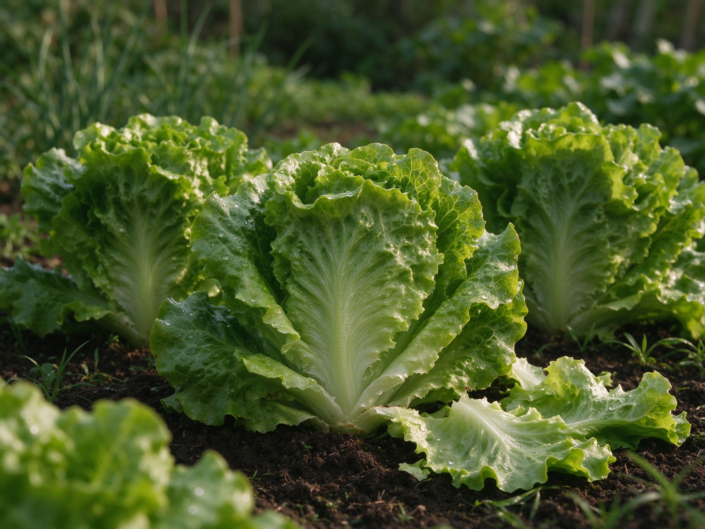
How to Grow Lettuce in Containers
Fast, easy salad greens — harvest crisp lettuce from a balcony or windowsill.
Read guide →
Best Vegetables for Beginners
10 easy crops that practically grow themselves — perfect for your first garden.
Read guide →
How to Compost at Home
Turn kitchen scraps into free fertilizer with this simple beginner's guide.
Read guide →
How to Water Plants Correctly
Stop killing plants with bad watering — learn when, how, and how much to water.
Read guide →
How to Improve Garden Soil
Transform any soil into rich, productive beds for bigger, healthier harvests.
Read guide →
How to Grow Summer & Winter Squash
Zucchini, butternut, and pumpkins — grow prolific squash with these simple steps.
Read guide →
10 Easy Flowers for Beginners
Marigolds, sunflowers, zinnias and more — reliable blooms with minimal effort.
Read guide →
Control Weeds Naturally (No Chemicals)
Stop weeds with mulch, smart planting, and simple hands-on methods.
Read guide →
How to Grow Strawberries
Sweet berries in pots, beds, or hanging baskets — from planting to picking.
Read guide →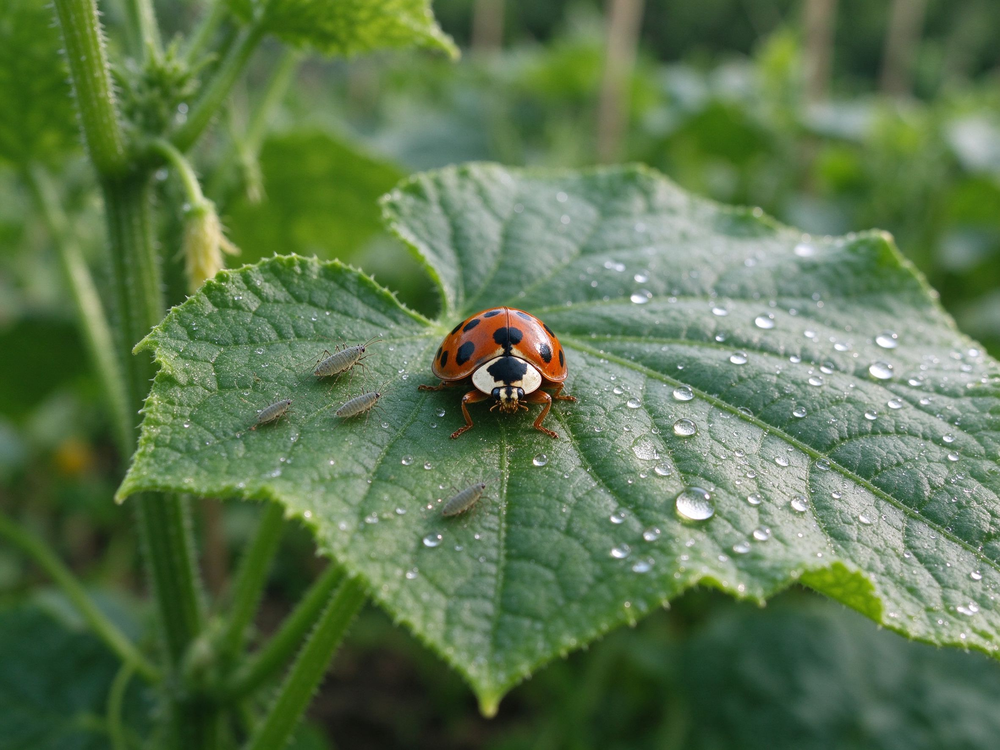
Garden Pests: Natural Remedies
Fight aphids, slugs, and more with safe, chemical-free methods.
Read guide →
Start a Vegetable Garden (Step-by-Step)
The exact beginner plan: choosing a spot, prepping soil, and planting your first crop.
Read guide →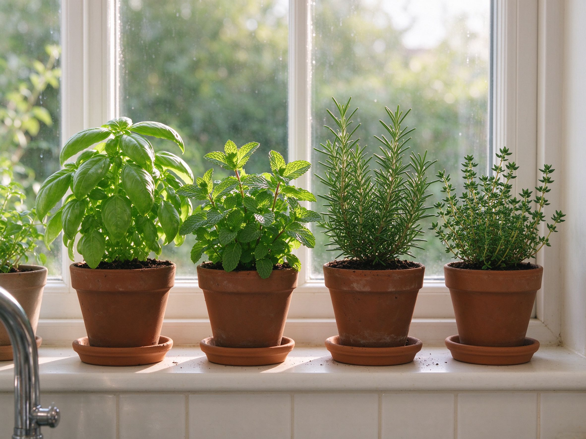
10 Easy Herbs to Grow Indoors
Basil, mint, rosemary and more — grow herbs on a windowsill all year round.
Read guide →
Container Gardening for Tiny Balconies
Grow tomatoes, peppers, and salad greens in pots with these simple tricks.
Read guide →